Introduction to Ag Informatics
Module 1, Lecture 4Ankita Raturi, ankita@purdue.edu
Fall 2021
Outline for Today
- What is Design?
- Designing Software for Food and Agricultural Systems
- Heuristic Evaluation Exercise
- Conducting User & Design Research in Agriculture: Case Study
What is Design?
Envisioning solutions (concepts, methods, tools, systems)
to real-world problems.
- Understanding stakeholders: goals, needs, and information challenges
- Mapping out the design space: problems, assumptions, constraints
- Explore the solution space: data, user experiences, systems, scope
- Architecting prototype solutions, of varying fidelity, to test with users
- Creating a product specification, prototype, and/or plan for implementation
img src: Petre, van der Hoek & Quach, 2016
User Interface (UI)
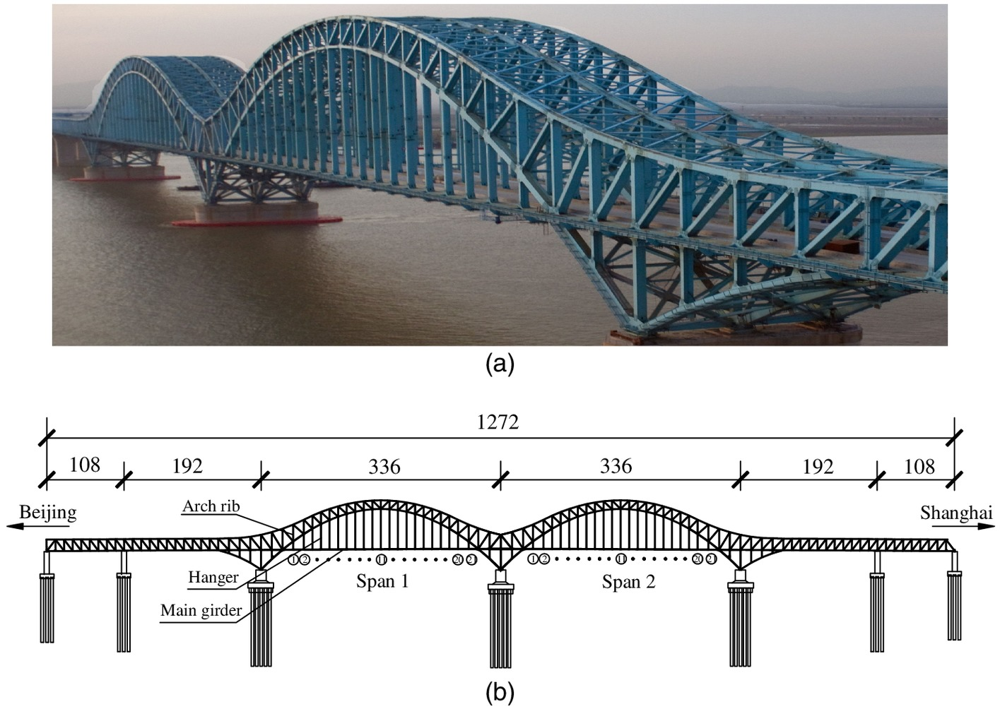User Experience (UX)
The Three Mile Island Accident, 1979
Jimmy Carter & the UI
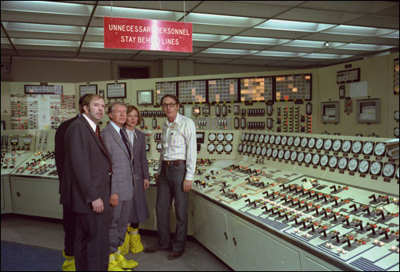Aftermath
- Series of malfunctions ->
- Relief valve indicator is ON = electricity running through connected loop ->
- Indicator light gave false evidence that the valve was shut
- Operators were not alerted to a critical error ->
- Partial meltdown and radiation leak.
- Most significant commercial nuclear accident in U.S.
https://americanhistory.si.edu/tmi/04-03.htm
User Interface
& User Experience Design
in Agriculture
A critical challenge in food and ag tech. Let's look at some examples.
Massey, 1973
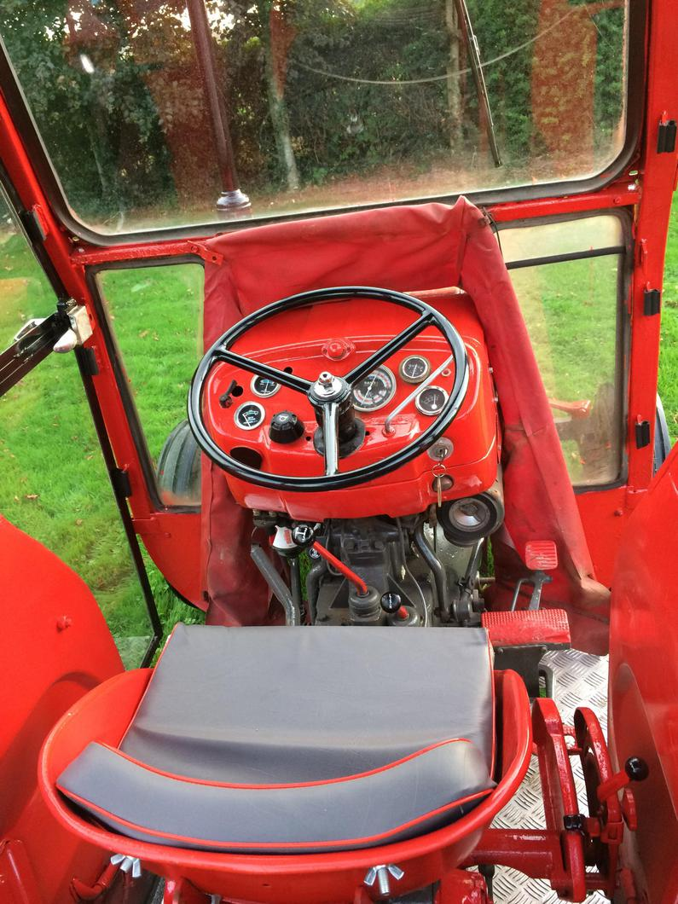Jamie Casey, via Farming Independent
Deere, 2019


Granular
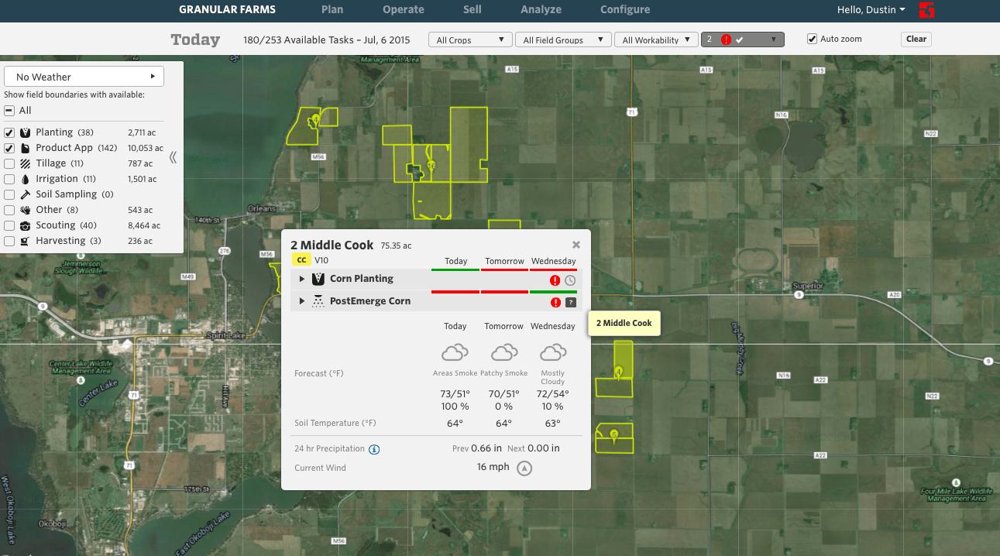https://agfundernews.com/dupont-acquires-farm-management-software-granular-300m.html
Tend
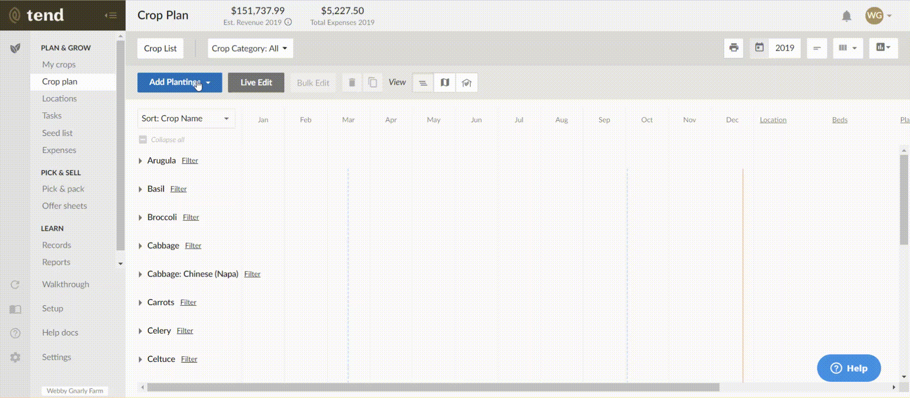https://tend-com.zendesk.com/hc/en-us/articles/360037714152-Crop-Planning-in-Tend-"
Cover Crop Species Selector - Excel
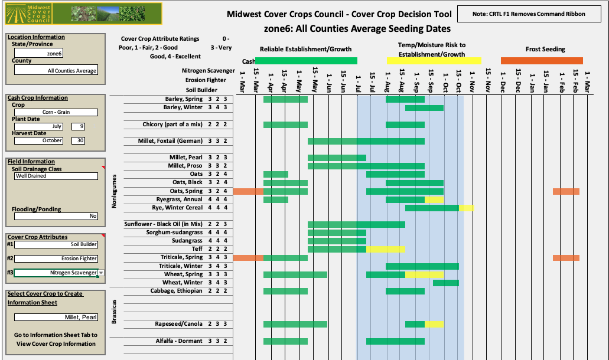Midwestern Cover Crop Council
Cover Crop Species Selector - Web
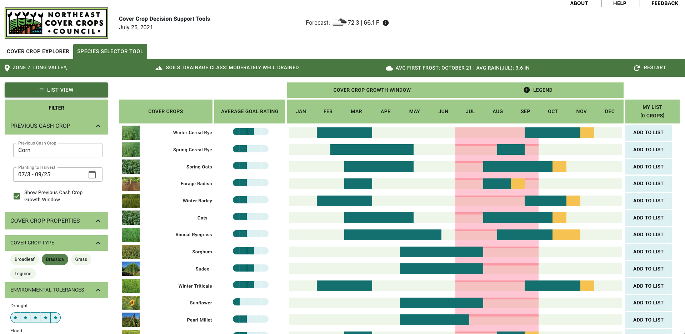Northeastern Cover Crop Council
Activity: Heuristic Evaluation
In PAIRS, Choose ONE:
- Graze Cart Product Setup: https://www.loom.com/share/2569fbeeadfd4dc493216ac23c21d7ff
- Local Line Produce Setup: https://share.vidyard.com/watch/cuFnPqoo7Jaatc5jdQQWQh
Evaluate using Nielsen's 10 Heuristics for Usability.
- For each heuristic, describe what you see and why you think it is a problem. 2-3 bullet response per heuristic.
- Use this reference: https://media.nngroup.com/media/articles/attachments/Heuristic_Summary1-compressed.pdf
What did you find?
User & Design Research in Agriculture
Case Study:
Information Challenges in Small to Medium Scale Californian Agriculture
https://escholarship.org/uc/item/64n882qb, Raturi 2017, Modeling Sustainable Agriculture
Environmental Assessments
- Certification & Labeling
- Federal
- National Organic Program
- Non-Profit
- Certified Naturally Grown
- Product Specific
- Certified Humane
- Retailer Specific
- Whole Foods Rating
- Policy & Regulation
- State (California)
- Irrigated Lands Regulatory Program
- Global Warming Solutions Act
- Federal
- Food Quality Protection Act
- Food, Ag, Conservation Trade Act
- Voluntary
- Environmental Quality Incentives Program
but, there is a fundamental
Information Challenge
since farms are
complex, dynamic, and connected.
Environmental assessment methods and software are not designed for farmers' usability or usefulness. Farmers are incorrectly assumed to be:
- Homogenous, uniform, or somehow standardized.
- Static, predictable, or short-lived, or somehow time bound.
- Isolated, individual, or disconnected from other systems.
Methods and tools do not take into account how farmers collect, store, and use farm data. There is a disconnect between assessment methods and tools, and farmers' existing information toolboxes and workflows
Research Question
How do
small-to-medium scale,
sustainability-oriented farmers,
model their agricultural systems to
assess environmental performance?
Theoretical Framing
Farms are Compex Adaptive Systems
- 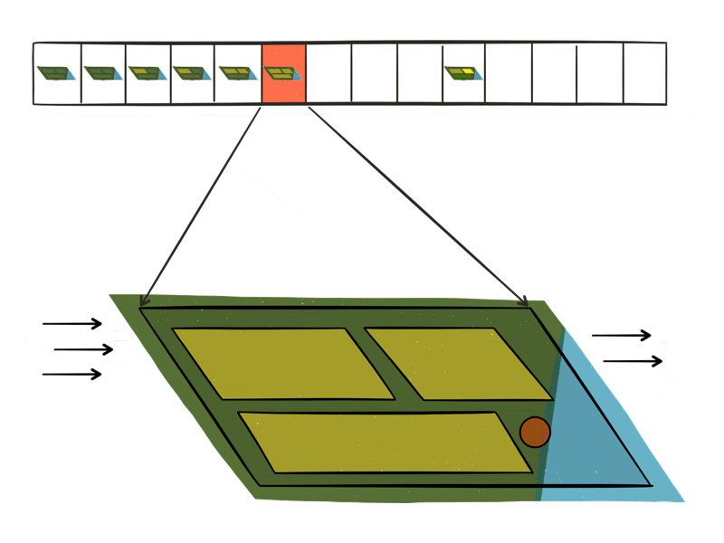
-
CAS Characteristics:
- Individuality and Adaptation,
- Feedback and Interdependence,
- Heterogeneity,
- Spatial and Dynamic Complexity. (NAP, 2015)
Everybody Models

Qualitative Field Study
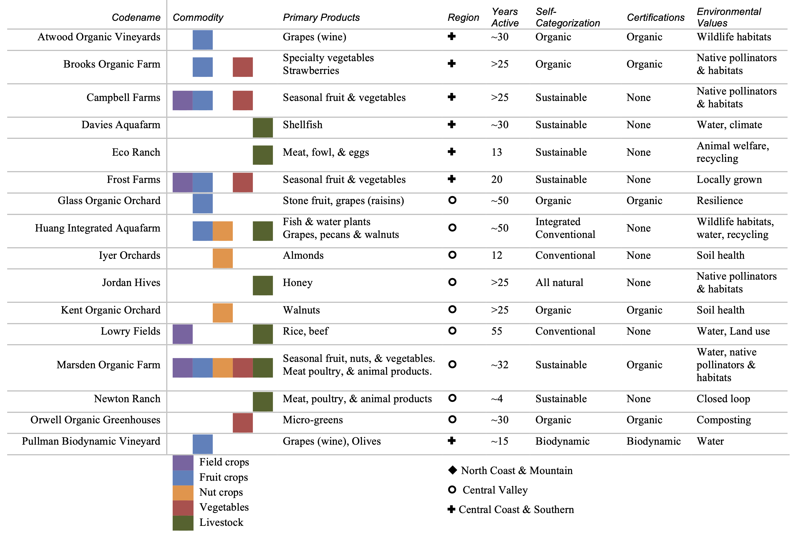Data Collection Methods?
- Observation:
"We work with a lot of data, but data comes in different forms. So lots of being in and walking the fields. Lots of, lots of tracking weather. And looking at the moisture content of the soil, sort of like, my dad has a better sense of- it’s still a little mystical to me when we have to water! [... A] lot of what we do is very old fashioned in term of: we just spend a lot of time in the fields. Walking, driving, by virtue of living here, we do a lot of visual observation of what’s happening."
Intervieweee, Glass Organic Orchard - Sampling
 Marsden Organic Farm, Water Tests
Marsden Organic Farm, Water Tests
- Sensing
In 2015 when this study was conducted, not a lot of in-field or remote sensing used due to cost, availability, accessibility.
Genres of Data?
- Operational Data
- Labor, finances, medical
- Regarding farm management
- Environmental Data
- Weather, land, pests
- Regarding the farming context.
- Resource Data
- Water, energy, seed, fertilizers, pesticides
- Regarding farming inputs.
 Atwood Organic Vineyard, Organic Input Form
Atwood Organic Vineyard, Organic Input Form
Spatio-temporal Models!
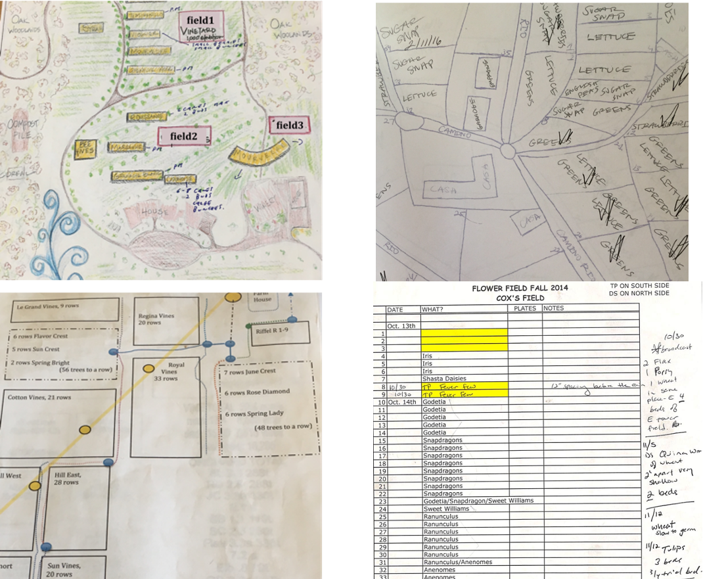Clockwise from top left: Pullman Biodynamic Vineyard's tree layout map, Brooks Organic Farm's monthly crop rotation map, Glass Organic Orchard's tree and infrastructure map, Marsden Organic Farm's flower planting record
Data model design method
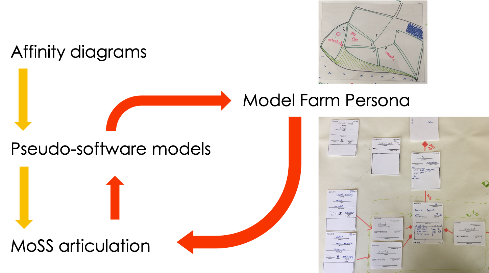0. Create Farm Personas (archetypes)
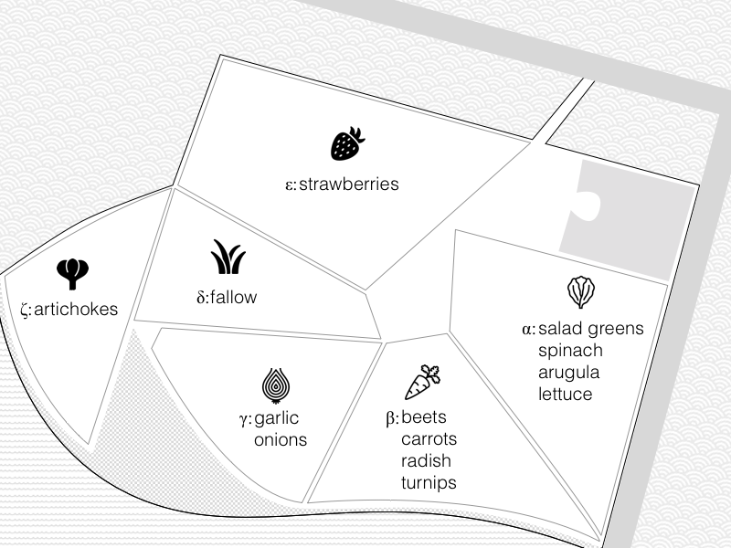1. Trace information flows
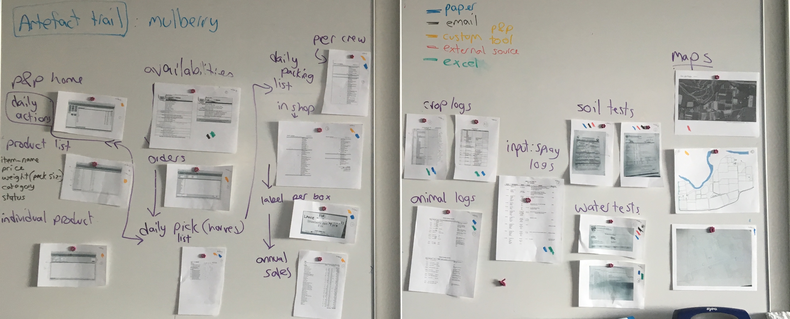3. Cluster common data then abstract to create pseudo-software models
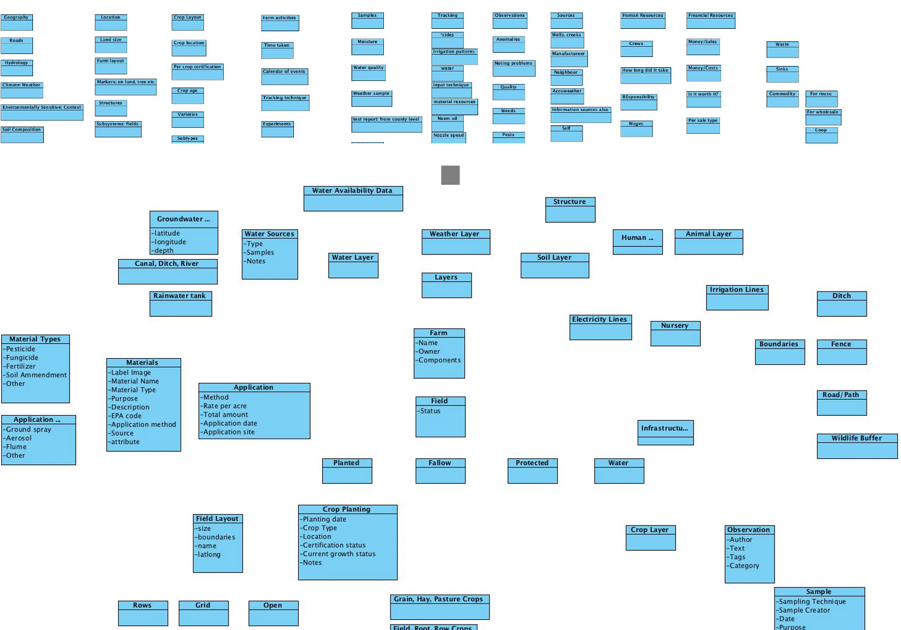4. Test early prototypes of the data model
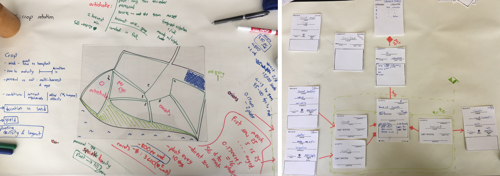5. Test our modeling approach with farmers
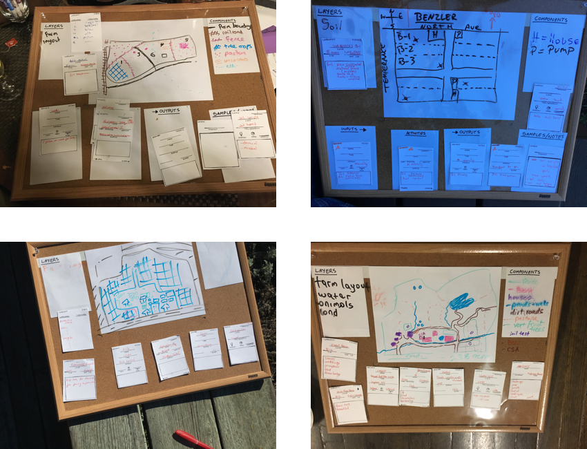MoSS Framework
Modeling Sustainable Systems Framework
Luna Orchard
1 acre mandarin field subsection


The MoSS Framework offers a means to represent heterogeneous farm data, in a coherent, changeable, system model.

So What?
Implications for Design
- Standardized data structures to model disparate types of farm data.
- A consistent modeling workflow spanning across devices.
- Varying levels of abstraction, formality, and granularity.
- Data reusability gap must be addressed.
- Change tracking is required by dynamic farms.
- Original data collection reasons and actual data use cases differ.
- Need for increased support for coordination and collaboration on farms.
- Design of tools for small farmers. 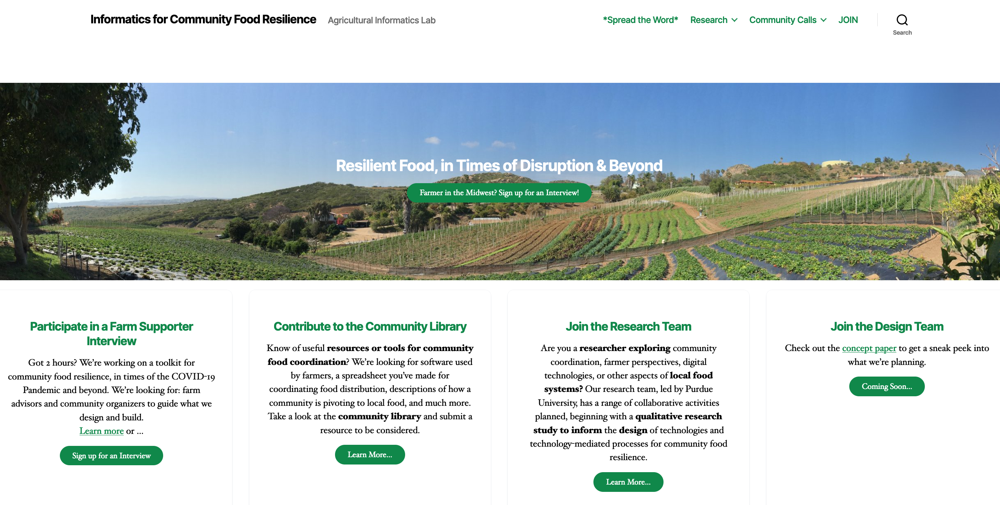
- Design of agricultural data architectures.
--- More on this next time during the cover crops case study.
Homework
- Optional further reading:
- Designing Sustainable Food Systems, Raturi et al. 2017
- Growing Plants, Raising Animals, and Feeding Communities through Connected Agriculture: An IoT Challenge, Raturi & Buckmaster, 2019
- Mobile Agriculture Design Toolkit, GSMA
- Digital agriculture to design sustainable agricultural systems, Basso & Antle, 2020
Next week: Data Discovery, Python, and Graphing
- Lab 1 (part 1.1 and 1.2) is due on Monday @ 5pm
Submit the link to your repository on
https://purdue.brightspace.com
Questions?
License

Introduction to Agricultural Informatics Course by Ankita Raturi, Purdue University is licensed under a Creative Commons Attribution-NonCommercial-ShareAlike 4.0 International License.
- You are free to:
- Share — copy and redistribute the material in any medium or format
- Adapt — remix, transform, and build upon the material
- Under the following terms:
- Attribution — You must give appropriate credit, provide a link to the license, and indicate if changes were made. You may do so in any reasonable manner, but not in any way that suggests the licensor endorses you or your use.
- NonCommercial — You may not use the material for commercial purposes.
- ShareAlike — If you remix, transform, or build upon the material, you must distribute your contributions under the same license as the original.
- No additional restrictions — You may not apply legal terms or technological measures that legally restrict others from doing anything the license permits.